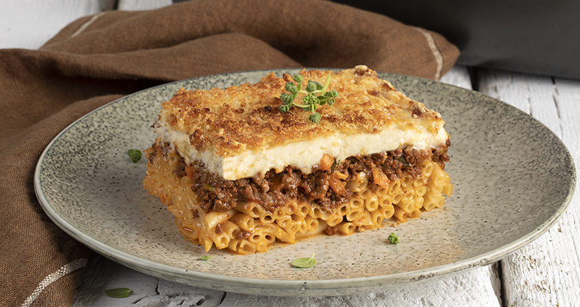

PASTITSIO

DESCRIPTION
Traditional Pastitsio, everyone's favorite, with seasoned minced meat and rich béchamel sauce! The Sunday table calls for delicious and classic dishes that everyone loves, like this recipe for the most flavorful and fluffy traditional Pastitsio that you can make with simple steps.
INGREDIENTS
For the minced meat:
- 500g of Pastitsio No2 MISKO pasta
- 750g of lean minced beef
- 4 tablespoons of olive oil
For the finely chopped vegetables:
- 1 onion
- 1 leek
- 1 celery stalk
- 1 carrot
- 500g of canned chopped tomatoes
- 2 egg whites
- 2 cups of grated kefalotyri cheese
- Salt
- Pepper
For the béchamel sauce:
- 100g butter
- 1 cup of flour
- 1 liter of milk
- 2 egg yolks
- A pinch of nutmeg
- Salt
- Pepper
STEPS
- Fill a large pot with 5 liters of water and bring it to a boil over high heat.
- Once the water starts boiling, add 35g of salt and pour in the Misko No2 macaroni. Stir with a fork and let it boil for 2-3 minutes less than the cooking time indicated on the package.
- Drain the pasta and drizzle it with 2 tablespoons of olive oil. Gently mix it and set it aside.
- In a separate pot, sauté the finely chopped onions, leek, celery, and carrot with olive oil.
- Add the ground beef, salt, and pepper, and sauté for 3 minutes.
- Add the tomatoes, simmer for 20-25 minutes, and remove from heat.
- Prepare the béchamel sauce. Heat the butter in a saucepan and once melted, add the flour. Stir well and gradually pour in the milk.
- Cook over low heat, stirring occasionally, until the mixture thickens.
- Remove from heat and add salt, pepper, the beaten egg yolks, and a pinch of nutmeg.
- Gently mix the cooked pasta with the lightly beaten egg whites and half of the grated cheese.
- Layer half of the pasta in a baking dish. Follow with layers of the meat mixture, the remaining pasta, and the béchamel sauce. Sprinkle the remaining cheese on top.
- Bake at 180°C (350°F) for 40 minutes.
- Your pastitsio is ready to be served!
Previous page